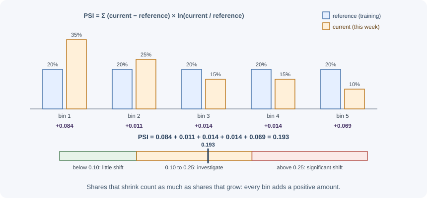

Production Monitoring and Drift¶
A model is trained on yesterday's data and serves today's users. The moment it ships, the world starts moving away from what it learned: users change habits, products add features, upstream systems change formats. Unlike a crashed service, a model that has drifted keeps answering with full confidence and HTTP 200. Production monitoring for machine learning watches for that: whether inputs still look like the training data, whether predictions still behave as expected, and, once labels arrive, whether the model is still right.
This lesson monitors the TaskFlow priority suggestion model from experiment tracking and model registry. It covers the kinds of drift, measuring them with the population stability index (PSI) and the Kolmogorov-Smirnov (KS) test, performance monitoring when labels arrive late, feedback loops, and when to retrain. All code was run with Python 3.12, NumPy 2.5, pandas 3.1, SciPy 1.18, and scikit-learn 1.9; the outputs are from those runs. Service-level monitoring (latency, errors, SLOs, alerting) works as for any API and is covered in section 07's Monitoring and Logging; quality monitoring of LLM features is covered in Evaluation and Monitoring.
Why it matters¶
Google's Rules of Machine Learning has a rule just for this, #10, "Watch for silent failures", noting that a decaying system keeps behaving "reasonably good, decaying gradually". Nobody files a bug for "suggestions are a bit worse than in March". Without monitoring, the first sign of drift is a business metric that slipped for months, and by then nobody can say whether the cause was the data, the model, or a product change.
Monitoring also protects you from the opposite mistake: retraining on every alarm. Drift statistics are noisy, and many shifts do not hurt the model at all. Good monitoring tells you which changes matter, gives you labels to prove it, and feeds a retraining process that still goes through the same gates as any release.
Real-world usage¶
- Google's Rules of ML. Besides rule #10, the guide recommends logging the features used at serving time (rule #29) and measuring training/serving skew (rule #37, "Measure Training/Serving Skew"), because a discrepancy "probably indicates an engineering error". Many production "drift" alerts are such skew bugs.
- Google Cloud's MLOps guide. MLOps: continuous delivery and automation pipelines lists retraining triggers: on demand, on a schedule, on availability of new training data, on model performance degradation, and on significant changes in the data distributions. It also requires tracking summary statistics of the data and the online performance of the model.
- Banking and PSI. A study of the statistical properties of the population stability index (Western Michigan University, 2018) describes PSI as the measure banks use to monitor whether a model still fits the current population, where a high value can trigger an internal investigation or a regulator's audit. It notes that the usual thresholds (below 0.10 "little shift", above 0.25 "significant shift, action required") are used "without reference to Type I or Type II error rates".
- Failing Loudly (NeurIPS 2019). An empirical study of methods for detecting dataset shift compared detectors across many shifts and found that "a two-sample-testing-based approach, using pre-trained classifiers for dimensionality reduction, performs best": two-sample tests such as KS are the workhorse, applied to the right representation.
- Evidently's defaults. The open-source library's drift method documentation uses the KS test (numeric) and chi-squared test (categorical) with a 0.95 confidence level for reference data up to 1,000 rows, and switches to Wasserstein distance and Jensen-Shannon divergence with a 0.1 threshold above that, which avoids leaning on p-values for large samples. It also warns that drift tests do not react to more missing values, so null shares must be checked separately.
Popular tools and providers: Evidently and NannyML (open source), Arize, Fiddler, Azure Machine Learning model monitoring, Google Cloud model monitoring (Gemini Enterprise Agent Platform), and Prometheus with Grafana for the resulting metrics. Amazon SageMaker Model Monitor, an earlier managed option, is no longer open to new customers (November 2026).
How it works¶
What can go wrong after deployment¶
| Failure | TaskFlow example | First signal |
|---|---|---|
| Service failure | The model server runs out of memory | Errors and latency (section 07 monitoring) |
| Broken input data | A client stops sending days_until_due |
Null share and schema checks |
| Training-serving skew | The API computes title_length in characters, training used words |
Feature distributions differ from day one |
| Data drift | A new "quick add" creates many short tasks without due dates | Input PSI and KS |
| Label shift | A deadline-heavy quarter makes more tasks urgent | Label rate, predicted score share |
| Concept drift | A new triage team takes urgent support work, so support tasks stop being urgent | Only performance on labels |
| Feedback loop | Users accept suggested priorities, so labels copy the model | Holdout comparison |
The first three are bugs with a fix in code or data pipelines. The next three are the world changing. The last one is the model changing the world it learns from.
Monitoring layers¶
| Layer | What to measure | How often | Needs labels |
|---|---|---|---|
| Service | Request rate, errors, latency, saturation | Continuously | No |
| Data quality | Schema, null shares, value ranges, category vocabulary | Every batch or day | No |
| Input drift | PSI and KS per feature against the training reference | Daily | No |
| Prediction drift | Distribution of scores, share above the threshold | Daily | No |
| Performance | Precision, recall, AUC, calibration, per slice | Weekly, as labels arrive | Yes |
| Outcome | Suggestion acceptance, time to triage | Weekly | Product data |
The service layer reuses metrics and dashboards and alerting and on-call. The other layers need one thing the service layer does not: a prediction log that stores, for each request, the request ID, the model version, the features as the model saw them, and the score. It is the only reliable source for drift statistics, skew checks, and joining labels later (Rules of ML #29).
Kinds of drift¶
![Diagram: three panels; data drift, where P(X) changes: this week's title length distribution sits left of training because quick-add tasks are short, detected with PSI or KS on inputs and needing no labels; label shift, where P(Y) changes: the urgent share rises from 20 percent in training to 35 percent this week, detected from label and score rates; concept drift, where P(Y given X) changes: for support tasks the probability of being urgent at each days-until-due value is now lower than in training, the inputs can look unchanged, and it is detected only by performance on labels.](../drift-types.svg)
- Data drift (covariate shift): the distribution of inputs changes, P(X). The model may still be right for each input, but it now sees inputs it rarely trained on.
- Label shift (prior shift): the share of each class changes, P(Y). Thresholds and calibration go off even if the inputs look similar.
- Concept drift: the relationship between inputs and outcome changes, P(Y | X). The same task now means something else. This is the dangerous one, because input monitoring cannot see it.
Drift can be sudden (a product launch), gradual (habits changing), or recurring (weekends, quarter ends). Recurring patterns argue for comparing against a reference from the same period, or for alerting on persistent changes only.
Measuring drift: PSI¶
The population stability index compares the share of data in each bin between a reference (training) sample and a current sample:
PSI = Σ over bins (current share − reference share) × ln(current share / reference share)
Bins are cut at the reference quantiles (deciles are common), so every reference bin holds the same share. Empty bins get a small floor so the logarithm stays finite. Each bin adds a positive amount whether it gained or lost data, and the total grows with the size of the shift.

Working the first bin by hand: (0.35 − 0.20) × ln(0.35 / 0.20) = 0.15 × 0.560 = 0.084. The common rule of thumb reads PSI below 0.10 as little shift, 0.10 to 0.25 as worth investigating, and above 0.25 as a significant shift. Treat these as starting points to tune per feature: they come from credit scoring practice, not from a statistical test, and PSI is biased upward on small samples (500 rows of unchanged data gave PSI values of 0.01 to 0.03 in the daily example below).
Measuring drift: the KS test and other tests¶
The two-sample Kolmogorov-Smirnov test compares the empirical cumulative distributions of two samples. Its statistic D is the largest vertical gap between the two curves (0 = identical, 1 = no overlap), and its p-value is the probability of a gap at least that large if both samples came from the same distribution.
| Method | Data type | Output | Watch out for |
|---|---|---|---|
| PSI | Numeric (binned) or categorical | Effect size, rule-of-thumb thresholds | Binning choices; small-sample bias |
| KS test | Numeric, continuous | D statistic and p-value | p-values shrink with sample size |
| Chi-squared test | Categorical | Statistic and p-value | Same; needs enough counts per category |
| Wasserstein distance | Numeric | Distance in the feature's units | Scale-dependent; normalize to compare features |
| Jensen-Shannon distance | Categorical or binned | Bounded distance (0 to 1) | Needs a threshold choice like PSI |
| Domain classifier | Many features or text at once | AUC of telling old from new data | Shows that, not where, data differs |
A p-value answers "is there any difference?", not "is the difference big enough to matter?". With enough data the answer to the first question is always yes. The same shift of 0.03 standard deviations, measured three times:
n= 1,000: KS statistic 0.0560, p-value 8.69e-02, PSI 0.0369
n= 20,000: KS statistic 0.0139, p-value 4.16e-02, PSI 0.0013
n=200,000: KS statistic 0.0124, p-value 7.17e-14, PSI 0.0010
At 200,000 rows the test is overwhelmingly "significant" about a shift no model would notice, while PSI correctly stays near zero. Use effect sizes (PSI, D itself, distances) for alerts and keep p-values for small samples. There is also a multiple-testing cost: testing 7 features daily at a 5% significance level produces about 7 × 365 × 0.05 ≈ 128 false alarms a year from a perfectly stable system. Alert on effect sizes, require persistence, and review a weekly report instead of paging on every test.
Missing values hide from drift statistics¶
PSI and KS run on the values that are present. When a client stops
sending a field, the remaining values can look perfectly stable while
a quarter of the rows are empty. In the comparison below,
days_until_due has PSI 0.007, yet its null share rose by 0.28. Track
null shares, schema, and category vocabularies as separate data-quality
checks; they catch broken pipelines faster than drift statistics do.
Monitoring performance when labels arrive late¶
Drift tells you something changed; only labels tell you whether the model is still right. For TaskFlow, a suggestion's label arrives when the task's real urgency is known: the user changed or kept the priority over the next days, or the task was escalated. That label delay shapes the monitor:
- Join the prediction log with labels by request ID, and report by the week of the prediction, not the week the label arrived.
- Show label coverage next to every metric: a week that is 55% labeled is not comparable with a complete one.
- Show confidence intervals. Precision on 100 flagged tasks has an interval about 20 points wide; a dip inside it is noise. The Wilson interval behaves well for small counts.
- Slice by the segments that matter (project type, team size, language).
In the simulation below, support tasks stop being urgent from week 5 (a new triage team handles them), while the inputs do not change at all:
label_coverage precision precision_ci recall auc project_type_psi
week
1 1.000 0.623 0.54-0.70 0.200 0.717 0.000
2 1.000 0.578 0.48-0.67 0.165 0.711 0.001
3 1.000 0.613 0.53-0.69 0.200 0.705 0.004
4 1.000 0.638 0.56-0.71 0.212 0.732 0.000
5 1.000 0.472 0.39-0.56 0.203 0.660 0.000
6 1.000 0.378 0.30-0.47 0.159 0.660 0.003
7 1.000 0.408 0.33-0.49 0.196 0.665 0.001
8 0.550 0.539 0.43-0.65 0.247 0.641 0.000
Precision falls from about 0.61 to about 0.42 and AUC from 0.72 to 0.66, while the project-type PSI stays at zero: concept drift is invisible to input monitoring. Week 8 also shows why coverage matters: with 55% of labels in, its precision bounces up and its interval is wide.
Before labels arrive you can watch proxies: the score distribution, the share of high-confidence predictions, and estimated performance. NannyML's confidence-based performance estimation (CBPE) estimates classification metrics from calibrated scores without labels, but its documentation is explicit that it "will not work under concept drift i.e. when P(Y|X) changes". Proxies buy time; they do not replace labels.
Feedback loops¶
A model that influences its own future training data creates a feedback loop, a risk Google's Hidden Technical Debt in Machine Learning Systems describes as direct and hidden feedback loops. TaskFlow's suggestion sets the default priority in the form. Users often keep defaults, so "kept the suggested priority" becomes the label, and the next model learns to agree with the last one. Errors become self-confirming.
Mitigations:
- A holdout group. A small share of tasks (5%, chosen by hashing the task ID) gets no suggestion. Their labels show how users prioritize unaided, and give an unbiased evaluation set.
- Label from outcomes, not defaults. Prefer signals the suggestion does not set directly, such as escalations or completion times.
- Record exposure. Log whether a suggestion was shown, so training can weight or exclude influenced labels.
- Watch position and presentation effects. Rules of ML #36, "Avoid feedback loops with positional features", makes the same point for ranked lists.
![Diagram: the TaskFlow API suggests a priority and writes a prediction log with features, score, and model version; a daily drift monitor checks nulls, PSI, KS, and score shares; users act by keeping or changing the priority, a dashed red arrow noting that the suggestion shapes the label; labels arrive days later and are joined to the prediction log by request_id; a weekly performance monitor reports precision, AUC, and slices; both monitors feed trigger rules (schedule, labels, drops, drift) that start training but never promote; train and gate takes a snapshot, trains, and compares; deploy new version moves the alias and runs a canary before full traffic, back to the API; a red note says users tend to keep suggested values so labels drift toward the model, and a 5 percent holdout with no suggestion keeps unbiased labels.](../monitoring-feedback-loop.svg)
Retraining triggers¶
| Trigger | Example rule | Strength | Weakness |
|---|---|---|---|
| Schedule | Every 28 days | Simple, predictable | Retrains when nothing changed; late when things change fast |
| New data | 5,000 new labels since the last run | Uses fresh information | Labels may be biased (feedback loops) |
| Performance | Latest precision's upper bound below baseline minus 0.05 | Acts on real harm | Waits for labels |
| Drift | A key feature's PSI above 0.25 for 3 days | Early | Many drifts do not hurt; risk of churn |
| Event | A product launch or upstream schema change | Planned | Needs people to remember it |
Two rules keep retraining safe. First, a trigger starts the training pipeline; it never promotes. The new version goes through the same gate as any other: a newer holdout, slice checks, a canary (see the promotion gate). Second, retraining fixes drift only when fresh, correct labels exist. After a concept change, a model retrained on mostly old labels learns the old world again; sometimes the right response is a rule change, a feature change, or turning the suggestion off until enough new labels arrive.
Alerting on model health¶
Model alerts follow the same principles as service alerts: page a human only for urgent, actionable problems, and send the rest to a ticket or weekly report (see SLIs, SLOs, and error budgets). For the priority model:
| Signal | Page | Ticket | Weekly report |
|---|---|---|---|
| Scoring errors or latency | SLO burn rate | ||
| Null share of a required feature above 5% | Yes | ||
| Feature PSI above 0.25 on two consecutive days | Yes | ||
| Feature PSI above 0.10 for three days | Yes | ||
| Precision below baseline with confidence | Yes | ||
| Single-day drift blips, p-values | Yes |
When to use and when not to use¶
Every model in production needs the service, data-quality, and prediction-log layers from day one: they are cheap and catch most incidents. Drift and performance monitoring scale with the stakes.
| Situation | Monitoring to add |
|---|---|
| A low-stakes suggestion with an easy override | Service, data quality, weekly drift report, quarterly performance check |
| A model that drives decisions (fraud, pricing, credit) | Daily drift with alerts, weekly performance by slice, holdout groups, documented retraining policy |
| Labels arrive in minutes (clicks) | Near-real-time performance; drift matters less |
| Labels arrive in months (loan defaults) | Strong drift and proxy monitoring, cohort-based performance later |
| Very low traffic | Weekly or monthly windows; PSI and tests are noise on tiny samples |
| LLM features without trained models | Use the evaluation and tracing practices in the evaluation lessons |
Practical examples¶
Drift functions¶
# drift.py: PSI and two-sample tests for one feature at a time
import numpy as np
import pandas as pd
from scipy import stats
EPS = 1e-4 # floor for empty bins, so log() stays finite
def psi_numeric(reference: np.ndarray, current: np.ndarray, bins: int = 10) -> float:
"""Population stability index with bins cut at the reference deciles."""
reference, current = reference[~np.isnan(reference)], current[~np.isnan(current)]
edges = np.unique(np.quantile(reference, np.linspace(0, 1, bins + 1)))
edges[0], edges[-1] = -np.inf, np.inf
ref = np.histogram(reference, edges)[0] / len(reference)
cur = np.histogram(current, edges)[0] / len(current)
ref, cur = np.clip(ref, EPS, None), np.clip(cur, EPS, None)
return float(np.sum((cur - ref) * np.log(cur / ref)))
def psi_categorical(reference: pd.Series, current: pd.Series) -> float:
cats = sorted(set(reference.dropna()) | set(current.dropna()))
ref = reference.value_counts(normalize=True).reindex(cats, fill_value=0).to_numpy()
cur = current.value_counts(normalize=True).reindex(cats, fill_value=0).to_numpy()
ref, cur = np.clip(ref, EPS, None), np.clip(cur, EPS, None)
return float(np.sum((cur - ref) * np.log(cur / ref)))
def compare_feature(reference: pd.Series, current: pd.Series) -> dict:
"""Effect size (PSI) plus a test statistic and p-value, and the change in missing values."""
result = {"null_share_change": current.isna().mean() - reference.isna().mean()}
if pd.api.types.is_numeric_dtype(reference) and not pd.api.types.is_bool_dtype(reference):
ref, cur = reference.to_numpy(float), current.to_numpy(float)
ks = stats.ks_2samp(ref[~np.isnan(ref)], cur[~np.isnan(cur)])
result.update(psi=psi_numeric(ref, cur), test="ks", statistic=ks.statistic, p_value=ks.pvalue)
else:
table = pd.crosstab(pd.concat([reference, current]).astype(str),
np.r_[np.zeros(len(reference)), np.ones(len(current))])
chi2 = stats.chi2_contingency(table)
result.update(psi=psi_categorical(reference.astype(str), current.astype(str)),
test="chi2", statistic=chi2.statistic, p_value=chi2.pvalue)
return result
- Bins come from the reference only, so today's data cannot move
the bin edges.
np.uniquemerges duplicate edges for integer features with many ties. compare_featurereturns an effect size, a test, and the null-share change together, so a report never shows a p-value without its context.- Booleans and strings go to the categorical branch with a chi-squared test on a contingency table.
Comparing last week with the training data¶
# compare_week.py: compare one week of production inputs and scores with the training data
import mlflow
import numpy as np
import pandas as pd
from drift import compare_feature, psi_numeric
from make_dataset import make_tasks
FEATURES = ["title_length", "has_due_date", "days_until_due", "assignee_open_tasks",
"project_type", "mentions_blocker", "created_hour"]
reference = pd.read_parquet("data/tasks-2026-10.parquet")[FEATURES]
# Stand-in for last week's prediction log: 40% of tasks now come from the new "quick add"
current = make_tasks(3_000, seed=20261109)[FEATURES]
rng = np.random.default_rng(7)
quick = rng.random(len(current)) < 0.4
current.loc[quick, "has_due_date"] = False
current.loc[quick, "days_until_due"] = np.nan
current.loc[quick, "title_length"] = rng.integers(2, 6, quick.sum())
rows = {name: compare_feature(reference[name], current[name]) for name in FEATURES}
report = pd.DataFrame(rows).T[["test", "statistic", "p_value", "psi", "null_share_change"]]
print(report.to_string(float_format=lambda v: f"{v:.4f}"))
model = mlflow.sklearn.load_model("models:/taskflow-priority@champion")
ref_scores = model.predict_proba(reference.sample(3_000, random_state=1))[:, 1]
cur_scores = model.predict_proba(current)[:, 1]
print(f"\nprediction PSI {psi_numeric(ref_scores, cur_scores):.4f}, "
f"mean score {ref_scores.mean():.3f} -> {cur_scores.mean():.3f}")
In production current is read from the prediction log; here it is
generated with make_tasks from the previous lesson, then 40% of tasks
are changed the way the quick-add feature changes them.
test statistic p_value psi null_share_change
title_length ks 0.3285 0.0000 0.5269 0.0000
has_due_date chi2 931.0224 0.0000 0.3334 0.0000
days_until_due ks 0.0270 0.3650 0.0070 0.2824
assignee_open_tasks ks 0.0093 0.9749 0.0005 0.0000
project_type chi2 13.5029 0.0037 0.0053 0.0000
mentions_blocker chi2 0.4039 0.5251 0.0002 0.0000
created_hour ks 0.0146 0.6318 0.0058 0.0000
prediction PSI 0.2097, mean score 0.195 -> 0.200
Reading the report:
title_length(PSI 0.53) andhas_due_date(PSI 0.33) moved a lot: the quick-add effect, clearly above the 0.25 rule of thumb.days_until_duelooks stable by PSI and KS, but 28% more rows are empty: the real change hides in the null share.project_typedid not change at all, yet its chi-squared p-value is 0.004. With seven tests a day, such false alarms are routine; its PSI of 0.005 says the difference is negligible.- The scores shifted (prediction PSI 0.21) while the mean score barely moved (0.195 to 0.200). Averages hide distribution changes; compare distributions.
Why p-values alone mislead¶
# sample_size_effect.py: the same tiny shift, measured with more and more data
import numpy as np
from scipy import stats
from drift import psi_numeric
rng = np.random.default_rng(1)
for n in (1_000, 20_000, 200_000):
reference = rng.normal(0.0, 1.0, n)
current = rng.normal(0.03, 1.0, n) # a shift of 0.03 standard deviations
ks = stats.ks_2samp(reference, current)
print(f"n={n:>7,}: KS statistic {ks.statistic:.4f}, p-value {ks.pvalue:.2e}, "
f"PSI {psi_numeric(reference, current):.4f}")
The output is shown in the KS section above: the p-value falls from 0.087 to 7e-14 as the sample grows, while the KS statistic and PSI settle near their true, tiny values.
Alerts that need persistence¶
# daily_monitor.py: turn daily PSI values into alerts that need persistence
import numpy as np
import pandas as pd
from drift import psi_numeric
from make_dataset import make_tasks
def alert_level(psi_history: list[float]) -> str:
"""psi_history holds one value per day, newest last."""
if len(psi_history) >= 2 and min(psi_history[-2:]) > 0.25:
return "page" # large shift on two days in a row
if len(psi_history) >= 3 and min(psi_history[-3:]) > 0.10:
return "ticket" # moderate shift for three days: investigate in working hours
return "ok"
reference = pd.read_parquet("data/tasks-2026-10.parquet")["title_length"].to_numpy(float)
quick_add_share = [0, 0, 0, 0, 0.1, 0.2, 0.3, 0.4, 0.4, 0.4] # the feature launches on day 5
history: list[float] = []
for day, share in enumerate(quick_add_share, start=1):
today = make_tasks(500, seed=day)["title_length"].to_numpy(float)
rng = np.random.default_rng(100 + day)
quick = rng.random(len(today)) < share
today[quick] = rng.integers(2, 6, quick.sum())
history.append(psi_numeric(reference, today))
print(f"day {day:>2}: quick add {share:.0%}, PSI {history[-1]:.3f} -> {alert_level(history)}")
day 1: quick add 0%, PSI 0.034 -> ok
day 2: quick add 0%, PSI 0.023 -> ok
day 3: quick add 0%, PSI 0.009 -> ok
day 4: quick add 0%, PSI 0.012 -> ok
day 5: quick add 10%, PSI 0.072 -> ok
day 6: quick add 20%, PSI 0.184 -> ok
day 7: quick add 30%, PSI 0.411 -> ok
day 8: quick add 40%, PSI 0.575 -> page
day 9: quick add 40%, PSI 0.528 -> page
day 10: quick add 40%, PSI 0.662 -> page
The first four days show the noise floor of PSI on 500 rows (0.01 to 0.03). Day 7 is the first day above 0.25, but the rule waits for a second day, so a one-day blip would never wake anyone; the cost is one day of delay. Export the daily values as gauge metrics so dashboards and alert rules live with the rest of your monitoring.
Performance with delayed labels¶
# weekly_performance.py: join predictions with labels that arrive later, week by week
import numpy as np
import pandas as pd
from sklearn.metrics import roc_auc_score
def wilson_interval(successes: int, n: int, z: float = 1.96) -> tuple[float, float]:
"""95% confidence interval for a proportion; honest for small n."""
if n == 0:
return float("nan"), float("nan")
p = successes / n
denom = 1 + z**2 / n
center = (p + z**2 / (2 * n)) / denom
half = z * np.sqrt(p * (1 - p) / n + z**2 / (4 * n**2)) / denom
return center - half, center + half
def weekly_performance(predictions: pd.DataFrame, labels: pd.DataFrame,
threshold: float = 0.5) -> pd.DataFrame:
"""predictions: request_id, week, score. labels: request_id, is_urgent (arrives later)."""
joined = predictions.merge(labels, on="request_id", how="left")
rows = []
for week, part in joined.groupby("week"):
labeled = part.dropna(subset=["is_urgent"])
y = labeled["is_urgent"].astype(bool)
flagged = y[labeled["score"] >= threshold]
low, high = wilson_interval(int(flagged.sum()), len(flagged))
rows.append({
"week": week,
"label_coverage": len(labeled) / len(part),
"precision": flagged.mean(),
"precision_ci": f"{low:.2f}-{high:.2f}",
"recall": flagged.sum() / y.sum(),
"auc": roc_auc_score(y, labeled["score"]),
})
return pd.DataFrame(rows).set_index("week")
The simulation that produced the table in "Monitoring performance when labels arrive late" scores eight weeks of tasks with the champion model, flips 70% of support tasks to "not urgent" from week 5, and keeps only 55% of week 8's labels:
# simulate_weeks.py: eight weeks of predictions; from week 5 support tasks stop being urgent
import mlflow
import numpy as np
import pandas as pd
from drift import psi_categorical
from make_dataset import make_tasks
from weekly_performance import weekly_performance
model = mlflow.sklearn.load_model("models:/taskflow-priority@champion")
reference = pd.read_parquet("data/tasks-2026-10.parquet")
rng = np.random.default_rng(42)
predictions, labels, drift = [], [], {}
for week in range(1, 9):
tasks = make_tasks(2_000, seed=1_000 + week)
tasks["request_id"] = [f"w{week}-{i}" for i in range(len(tasks))]
tasks["week"] = week
tasks["score"] = model.predict_proba(tasks.drop(columns=["is_urgent", "request_id", "week"]))[:, 1]
if week >= 5: # concept drift: a new triage team now handles urgent support work
support = tasks["project_type"] == "support"
tasks.loc[support & (rng.random(len(tasks)) < 0.7), "is_urgent"] = False
labeled = tasks if week < 8 else tasks.sample(frac=0.55, random_state=week) # labels lag
predictions.append(tasks[["request_id", "week", "score"]])
labels.append(labeled[["request_id", "is_urgent"]])
drift[week] = psi_categorical(reference["project_type"], tasks["project_type"])
report = weekly_performance(pd.concat(predictions), pd.concat(labels))
report["project_type_psi"] = pd.Series(drift)
print(report.to_string(float_format=lambda v: f"{v:.3f}"))
In production the two inputs are queries: predictions from the prediction log, labels from the task history, both with the request ID the API wrote when it made the suggestion.
Retraining triggers as code¶
# retrain_trigger.py: decide whether to start the training pipeline (never to promote)
from dataclasses import dataclass
from datetime import date
@dataclass
class MonitorState:
last_trained: date
labels_since_training: int
baseline_precision: float # from the weeks after the last promotion
latest_precision_ci_high: float # upper bound of the latest week's 95% interval
days_with_feature_psi_above_025: int
def retraining_reasons(s: MonitorState, today: date) -> list[str]:
reasons = []
if (today - s.last_trained).days >= 28:
reasons.append("schedule: 28 days since the last training run")
if s.labels_since_training >= 5_000:
reasons.append(f"data: {s.labels_since_training:,} new labels")
if s.latest_precision_ci_high < s.baseline_precision - 0.05:
reasons.append(f"performance: precision upper bound {s.latest_precision_ci_high:.2f} "
f"is below baseline {s.baseline_precision:.2f} minus 0.05")
if s.days_with_feature_psi_above_025 >= 3:
reasons.append("drift: a feature has PSI above 0.25 for 3 days")
return reasons
state = MonitorState(last_trained=date(2026, 10, 20), labels_since_training=4_200,
baseline_precision=0.61, latest_precision_ci_high=0.49,
days_with_feature_psi_above_025=0)
for reason in retraining_reasons(state, today=date(2026, 11, 14)):
print(reason)
performance: precision upper bound 0.49 is below baseline 0.61 minus 0.05
Using the upper bound of the interval means the trigger fires only when even the optimistic reading of week 7 is clearly worse than the baseline. The reasons are recorded with the training run as tags, so the registry shows why each version was trained. Because this is concept drift, the pipeline should train on the weeks after the change, and the gate should evaluate on those weeks too, or the "new" model will learn the old behavior.
Best practices¶
- Log every prediction with request ID, model version, the features as served, and the score; it is the foundation of all other monitoring.
- Check data quality (schema, nulls, ranges, vocabularies) separately from drift; it catches most incidents first.
- Alert on effect sizes such as PSI, with persistence rules; use p-values only on small samples and in reports.
- Monitor prediction distributions, not only averages.
- Report performance by prediction week, with label coverage, confidence intervals, and slices.
- Keep a small holdout without the model's influence to get unbiased labels.
- Let triggers start training, never promotion; every retrained model passes the same gate and canary.
- Tune thresholds per feature after a few weeks of baseline data; document them with the model.
In production¶
- Every feature drifted overnight. Detect: PSI above 0.25 on most features at once, starting at a deploy time. Cause: training-serving skew or a pipeline bug (units, encoding, a renamed field), not the world changing. Fix: compare served feature values with the training pipeline's values for the same records, fix the code path, and add a skew check to CI.
- Drift alerts fire daily and everyone ignores them. Detect: dozens of drift tickets closed as "no impact". Cause: p-value alerts on large samples and many features. Fix: switch to effect-size thresholds, require persistence, and move single-day signals into a weekly report.
- A field went missing and nobody noticed.
Detect: weeks later,
days_until_dueis null for a third of rows. Cause: drift statistics ignore nulls; no data-quality check existed. Fix: alert on null shares of required features and validate schema at the API boundary. - Precision dropped but drift dashboards are green. Detect: weekly precision below its confidence band for two weeks, input PSI near zero. Cause: concept drift, such as a process change that alters what "urgent" means. Fix: confirm with the business owner, gather labels from after the change, retrain on recent data only, and consider disabling the suggestion meanwhile.
- Retrained models keep getting worse. Detect: each new version wins offline but acceptance declines. Cause: a feedback loop: labels are mostly accepted suggestions, so the model learns to copy itself. Fix: build evaluation and training sets from a holdout without suggestions, and from outcome-based labels.
- Performance numbers jump around every Monday. Detect: the latest week's metrics swing far more than earlier weeks. Cause: incomplete labels for recent predictions. Fix: show label coverage, report a week only when coverage passes a threshold, and plot confidence intervals.
Important terminology¶
- Data drift (covariate shift): A change in the distribution of inputs, P(X).
- Label shift (prior shift): A change in the distribution of outcomes, P(Y).
- Concept drift: A change in the relationship between inputs and outcomes, P(Y | X).
- Training-serving skew: A difference between features in training and in serving caused by different code or data paths.
- PSI (population stability index): A binned measure of how far a current distribution has moved from a reference.
- KS test: A two-sample test whose statistic is the largest gap between two empirical cumulative distributions.
- Reference window: The data that drift is measured against, usually the training data or a stable recent period.
- Label delay: The time between a prediction and knowing its correct outcome.
- Label coverage: The share of predictions in a window that have labels yet.
- Feedback loop: A model's predictions influencing the data it is later trained or evaluated on.
- Holdout group: Users or items deliberately not exposed to the model, used for unbiased measurement.
Common mistakes and misconceptions¶
- Equating drift with degradation: many shifts do not hurt the model, and concept drift can hurt it with no input drift at all.
- Paging on p-values from large samples.
- Comparing averages instead of distributions.
- Forgetting missing values, which drift statistics silently ignore.
- Judging last week's performance before its labels have arrived.
- Retraining automatically on every alert, and promoting the result without a gate.
- Using accepted suggestions as ground truth without a holdout.
- Monitoring only the model and not the pipeline that feeds it.
Revision questions¶
- Explain data drift, label shift, and concept drift with a TaskFlow example of each. Which one can input monitoring not detect?
- Compute the PSI for two bins with reference shares 0.5 and 0.5 and current shares 0.7 and 0.3. Which rule-of-thumb band is it in?
- Why does a KS test on 200,000 rows flag shifts that do not matter, and what should alerts use instead?
- You test 7 features daily at 5% significance. How many false alarms do you expect in a year from a stable system, and how do you reduce them?
- Precision fell from 0.61 to 0.42, but no feature drifted. What happened, and what would you do?
- Describe a feedback loop in a suggestion feature and two ways to break it.
- Compare schedule-based and performance-based retraining triggers. Why should a trigger never promote a model by itself?
- What fields must a prediction log contain, and why does each matter?
Further learning¶
- Google: Rules of Machine Learning
- Google Cloud: MLOps continuous delivery and automation pipelines
- Evidently: data drift methods
- NannyML: performance estimation
- Chip Huyen: Data distribution shifts and monitoring
- SciPy: ks_2samp
- Next: interview questions and answers. Back to the MLOps and model lifecycle overview.